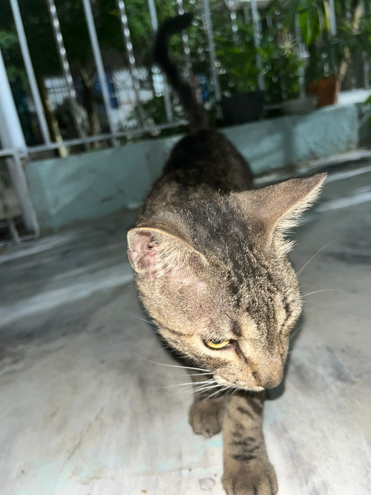
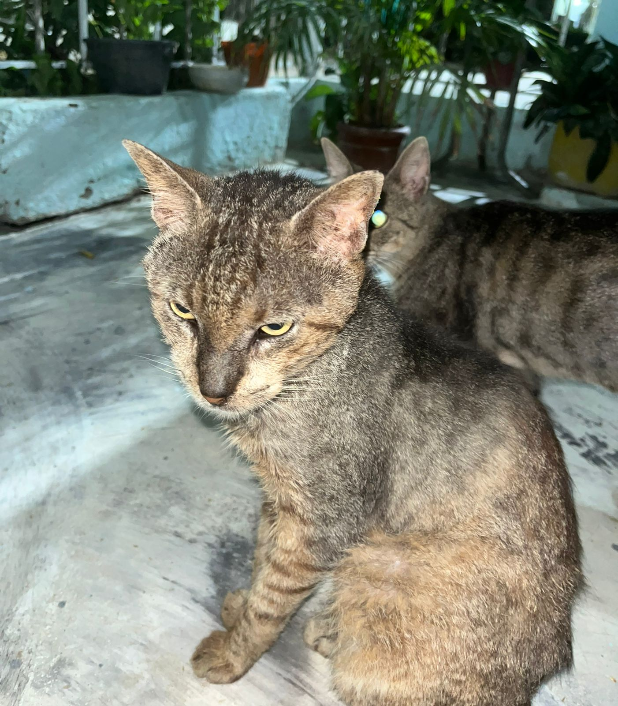
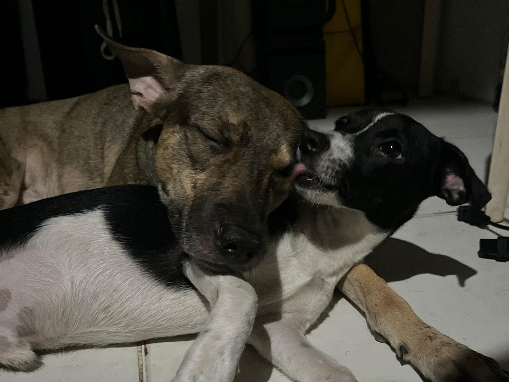

Sirius es un gato pesado, sus enemigos son los perros. Es loco y es la mano izquierda de Tom.

Tom es un gato con poder cósmico, ha sobrevivido a 4 intentos de envenenamiento.

Charli y Calvito son unos perros que han sobrevivido a todo.